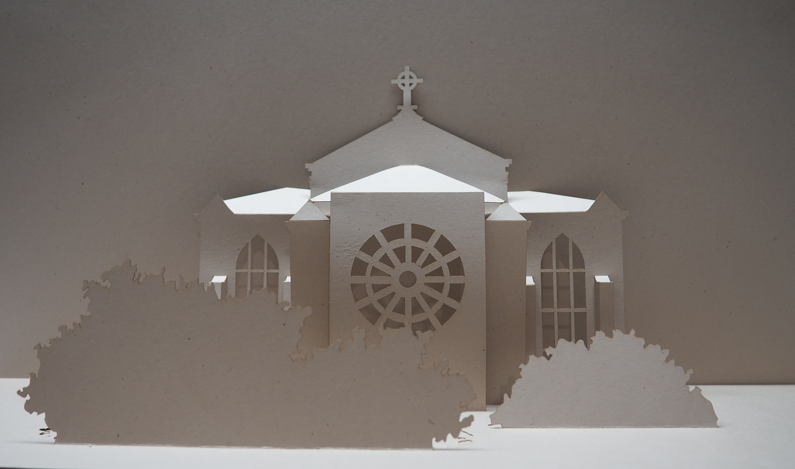
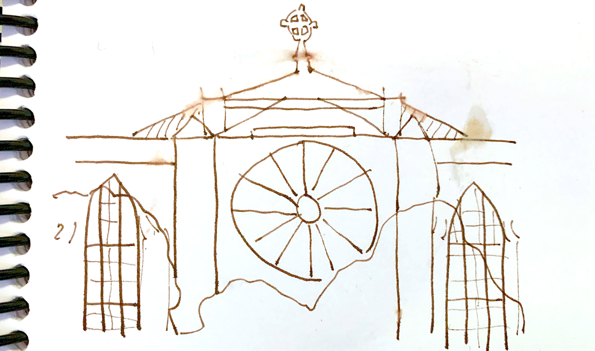
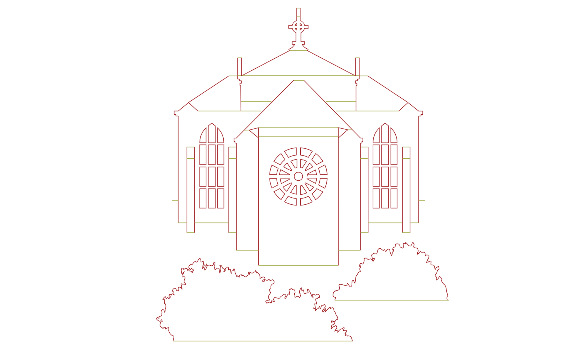
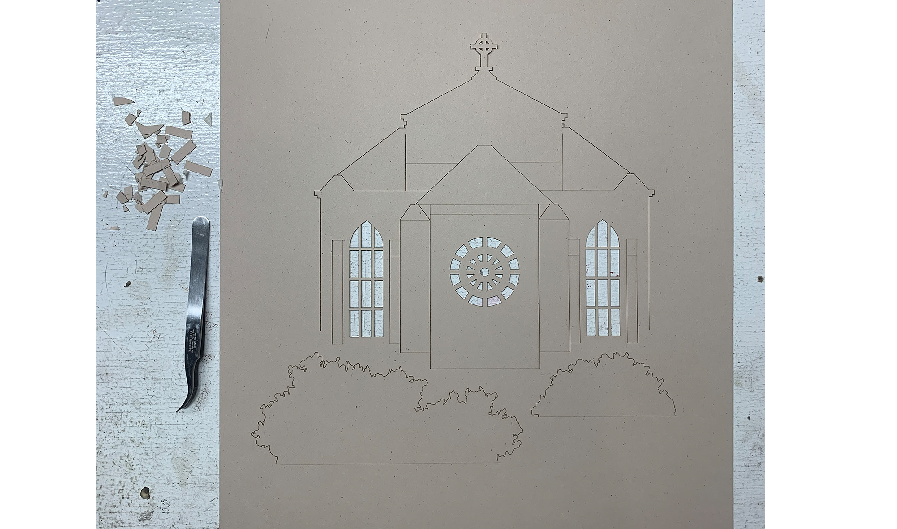

St Mark
A second kirigami effort of a favorite Seattle landmark.
Prev
>
Home
>
Next
>
1 / 5

The final product
2 / 5
The subject structure
3 / 5

My doodle
4 / 5

The svg rendering kirigami'd
5 / 5

Cutout
❮
❯